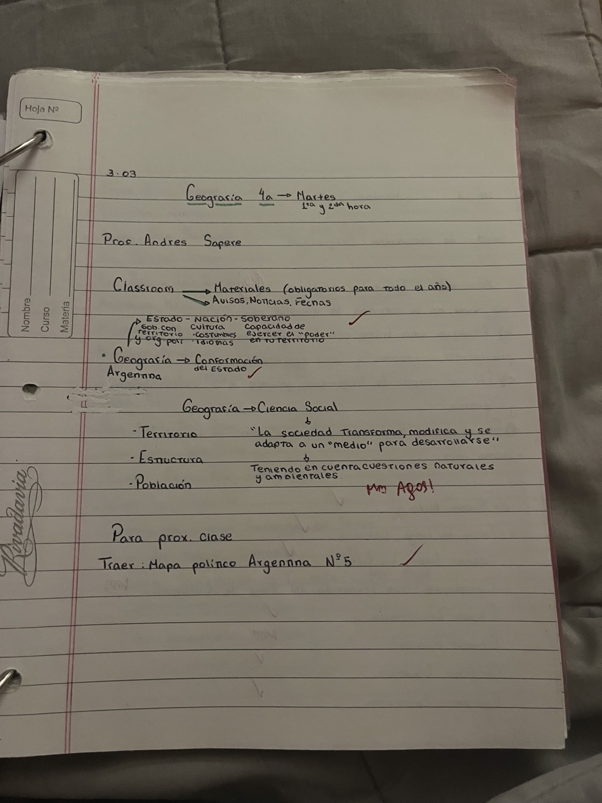

Territorio
Es el espacio geográfico sobre el que una sociedad ejerce control y desarrolla diferentes actividades. El territorio no es solamente una superficie: también incluye las relaciones sociales, políticas y económicas que se producen en él.
Conceptos iniciales de Geografía
La Geografía es una ciencia social porque estudia cómo las sociedades se relacionan con el espacio y cómo transforman, modifican y se adaptan al medio para desarrollarse.
Para estudiar un territorio no alcanza con observar solamente los elementos naturales. También es necesario tener en cuenta las actividades de las personas, la organización política, la población, la economía y los cambios que se producen a lo largo del tiempo.
Es el espacio geográfico sobre el que una sociedad ejerce control y desarrolla diferentes actividades. El territorio no es solamente una superficie: también incluye las relaciones sociales, políticas y económicas que se producen en él.
Está formada por las personas que habitan un territorio. Su distribución, sus movimientos, sus actividades y sus características son importantes para comprender cómo se organiza un espacio.
El Estado es una organización política que tiene instituciones y autoridad sobre un territorio y una población. Para existir necesita un territorio delimitado, una población y un poder capaz de ejercer autoridad.
La soberanía se relaciona con la capacidad del Estado para ejercer su poder dentro de su territorio y tomar decisiones sin depender de otro Estado.
La nación se vincula con una comunidad que comparte elementos como cultura, costumbres, historia e identidad. Estado y nación están relacionados, pero no significan exactamente lo mismo.
